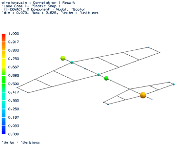

Generate and display CoMAC results
 Simulation Navigator
Simulation Navigator
-
 Correlation Metrics
Correlation Metrics -
 Generate (1 – COMAC) Results
Generate (1 – COMAC) ResultsIn the Simulation Navigator, a (1 – COMAC) node is created under the Correlation Metrics node.


 Correlation Metrics
Correlation Metrics

 (1 – COMAC)
(1 – COMAC)
-
.gif) (1 – COMAC)
(1 – COMAC) -
 Post Processing Navigator
Post Processing Navigator -
 Correlation 1
Correlation 1In the Post Processing Navigator, notice the Correlation 1 result nodes.
 Correlation 1
Correlation 1

 (1 – COMAC), X Component - Nodal
(1 – COMAC), Y Component - Nodal
(1 – COMAC), X Component - Nodal
(1 – COMAC), Y Component - Nodal
 (1 – COMAC), Z Component - Nodal
(1 – COMAC), Z Component - Nodal
-
(1 – COMAC), X Component – Nodal

|
Note |
A degree-of-freedom displayed with a large red sphere indicates that its (1 – COMAC) value approaches 1.0. The value indicates that the degree-of-freedom has poor correlation across the set of mode pairs. Notice the spheres on the fuselage. They are located at the sensors which had the cells with green and blue colors in the X column of the CoMAC matrix on the previous page. Compare the colors of the displayed spheres to the color spectrum to find the values for the degrees-of-freedom. Explore (1 – COMAC) results for the Y and Z components. |